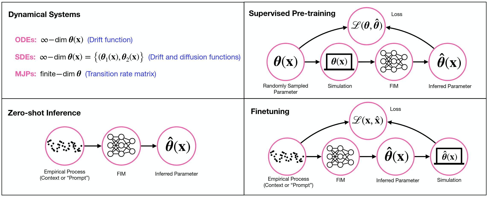

The Foundation Inference Model Program#
Foundation Inference Models (FIMs) are pretrained deep neural network models that perform zero-shot (or in-context) inference of dynamical systems from noisy time series data, and can easily be fine-tuned to specific tasks.
Our released FIMs include:
FIMs for Stochastic Differential Equations (paper, huggingface)
FIMs for Markov Jump Processes (paper, huggingface)
FIMs for Zero-shot Time Series Imputation (paper, huggingface)
Note
Take a look at our tutorials!
Currently, we are working on releasing
FIMs for Point Processes (preprint)
FIMs for Ordinary Differential Equations (preprint)
FIMs for Accelerating Coarse-graining and Equation Discovery (preprint)
Defining FIMs#
A satisfactory FIM should be able to cope with dynamic phenomena of very diverse nature and thus
capture various secular and seasonal patterns, as well as non-periodic fluctuations;
handle observations from empirical processes of different dimensionalities;
process any number of such observations, which might be recorded regularly in time or not; and
deal with noise signals of different kinds.
To build such FIMs, we follow a general three-step pretraining strategy (FIM workflows, upper right):

Fig. 1 FIM workflows#
Construct a broad prior probability distribution over the space of dynamical systems. This distribution represents our beliefs about the general class of systems we expect to encounter in nature.
Sample dynamical systems from this prior distribution, simulate them, and corrupt the simulated paths to generate a dataset of noisy observations and target dynamical systems. This step defines a supervised, meta-learning task that amortizes the inference process.
Train a FIM to match these observation-(target-)system pairs in a supervised way.
Once (pre)trained
FIMs can accurately infer the governing dynamical system in zero-shot (in-context) mode from unseen, noisy, and heterogeneous datasets (FIM workflows, lower left); and
FIMs can also rapidly be finetuned to target datasets (FIM workflows, lower right).
FIMs therefore amortize the inference of dynamical systems.
About us: Deep Learning for Scientific Discovery Group#
The Deep Learning for Scientific Discovery (DL4SD) group at the Lamarr Institute is an interdisciplinary team working at the intersection of machine learning, natural language processing, statistical physics, and complexity science.
At DL4SD, our aim is to tackle system identification problems across the natural and social sciences. This means that we develop artificial intelligence methods to infer dynamical systems — such as ordinary, partial, and stochastic differential equations — from noisy, sparse and high-dimensional data. These models deliver interpretable and predictive insights into the underlying mechanisms governing dynamic phenomena.
Ultimately, our goal is to automate the formulation of scientific hypotheses, expressed as mathematical models derived directly from data, to better understand complex dynamic phenomena.
Note
Take a deeper look at our team.
The Problem of System Identification or Dynamical System Inference#
Inferring dynamical systems from data involves two interconnected challenges:
representation learning — which involves determining appropriate coarse-grained data representations, and
dynamical model fitting — which consists in learning an interpretable set of equations (e.g., ODEs, SDEs) that represent the changes in those representations.
Traditional methods such as symbolic and Gaussian process regression or Neural-ODE/SDE/MJP rely on variational inference to jointly solve both tasks, but its slow convergence and intricate optimization render it impractical for scalable, automated scientific discovery.
The FIM program decouples these learning processes by amortizing the model-fitting step. Indeed, FIMs introduce a form of in-context, simulation-based inference by encoding canonical mathematical models (ODEs, SDEs, MJPs, etc) widely used in science.